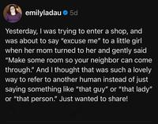
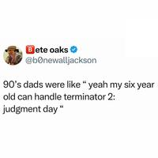

How will Apple change in September under its new CEO — former hardware chief John Ternus? The blog Geeky Gadgets is already expecting "significant updates to the iPhone over the next three years," as well as streamlined internal engineering (plus durability enhancements and high-capacity batteries).
2026: Foldable display
2027: Bezel-less iPhone 20 (celebrating the iPhone's 20th anniversary)
CNET's web sites (which include ZDNET, PCMag, Mashable and Lifehacker) are even hosting a contest "to see which of our readers can make the best Apple predictions for 2026. Answer five questions in any of our three rounds of the contest to be entered to win [$applePrize] in September."
But the blog 9to5Mac already has a list of new upcoming Apple products, courtesy of Bloomberg's Mark Gurman (who appeared
on the TBPN podcast this week "to talk about Apple's CEO transition, what to expect from John Ternus, and more."
As part of the conversation, Gurman said: "There are six major Apple products in development right now, six major new product categories." Here's the full list he shared:
1. AI AirPods
2. Smart glasses
3. Pendant
4. Smart display
5. Tabletop robot
6. Security camera
[...] Gurman has reported on the Pendant before as a new AI wearable that's an alternative to AI AirPods and Glasses. All three products are expected to rely heavily on a paired iPhone for Siri and other AI features. The smart display ('HomePad'), tabletop robot, and security camera are all brand new Apple Home products.
The AI features arrive "thanks to the revamped Apple Foundation Models trained by Google Gemini," reports the AppleInsider blog (citing Gurman's Power On newsletter at Bloomberg). The smart doorbell camera will include "an Apple Intelligence-upgraded version of the facial recognition already included with HomeKit Secure Video. Today, HSV can utilize the Apple Home admin's tagged faces in their Photos app to label people that are viewed on the camera. When a known person rings the doorbell, Siri will announce them by name over the HomePod chime."
Read more of this story at Slashdot.
In March, NASA Administrator Jared Isaacman announced that the moon-orbiting "Lunar Gateway" space station was being "paused" to focus instead of missions to the moon's surface. And Ars Technica agrees that the project was essentially "spending billions of dollars to make it more difficult to reach the lunar surface and faced the prospect of watching Chinese astronauts wander around on the Moon from orbit instead of being there themselves."
"But this week, we learned another reason that Gateway is going away, and it's pretty shocking."
During testimony before the US House Committee on Science, Space, and Technology, Isaacman faced questions about NASA's budget... He then publicly confirmed rumors (reported last month by Ars) that there is corrosion in both the HALO [Habitation and Logistics Outpost] and I-HAB modules of the Gateway. "The only two habitable volumes that were delivered — both were corroded," Isaacman said. "And that's unfortunate because it would have delayed, probably beyond 2030, the application of Gateway...."
In a statement, Northrop confirmed the issue as well. "Using NASA-approved processes, Northrop Grumman is completing repairs to HALO after a manufacturing irregularity," a company spokesperson told Ars. "We expect to complete repairs by the end of the third quarter. HALO can still be repurposed for any mission, and it's the most mature technology to support a deep space or lunar habitat." By referring to a "manufacturing irregularity," Northrop answered the central mystery here: how corrosion could appear in both modules. This is because a French-Italian space and defense company, Thales Alenia Space, built the primary structure of HALO for Northrop Grumman. The module was delivered from Italy to the United States about a year ago
Thales is a powerhouse of the European space industry. It built several pressurized modules of the International Space Station, and it's working with Axiom Space to build its commercial space station. The company also had a big piece of the Lunar Gateway in addition to HALO, developing the I-HAB module and a future communications and refueling module known as ESPRIT... After the issue was discovered, the European Space Agency established a "tiger team" to investigate. "Based on the investigation and available data, the corrosion issue was understood to be technically manageable and did not constitute a showstopper for I-HAB, which was, in any case, in better conditions than HALO from [a] corrosion point of view," the spokesperson said...
After publication of this story on Friday, Axiom Space confirmed that it has also experienced corrosion issues. In a statement, the company said: "Axiom Space has experienced a similar phenomenon with the first module; we are leveraging the expertise of NASA and Thales Alenia Space to address the issue. Module 1 is on track to launch in 2028."
Read more of this story at Slashdot.
The Washington Post reports that some teachers are now implementing "brain breaks" in their classrooms to cope with shorter attention spans, "including limiting screen time; cutting the time students spend on one activity; adding more engaging, hands-on projects; and practicing meditation."
Some teachers say the efforts are helping, at least a little... To engage students, teachers say they often feel the need to deliver teaching not only in shorter bursts, but also in more entertaining ways. "The new word is 'edutainment,'" said Curtis Finch, superintendent of Deer Valley Unified School District in Arizona. "How can you make your lesson applicable, interactive? Teachers are going to have to be more engaging for students...."
In a kindergarten classroom at McKinley STEAM [a K-8 public school], students start the day with a meditation. The classroom of two dozen children is perhaps its quietest during this short activity every morning. Imagine you're in the Arctic, a voice from a meditation video tells them, with snowflakes melting on your skin. Silently, the children lay down on the carpet and close their eyes for a moment. After the meditation, the students gather in a circle and do a few deep breathing exercises before taking turns proclaiming what they are capable of each day. "I can be a good student," one little boy said before the child next to him replied: "I can listen to the teacher." The goal is that these mantras will stay with the children hours later, when they have to sit through the more tedious lessons of the day.
An instructional coach at McKinley STEAM says the strategies are working students aren't reaching for their phones during class and sometimes actually get drawn into lessons.
The article also explains why some teachers find this necessary:
In recent years, educators say, it has grown more challenging to get students to pay attention. Eighty-eight percent of respondents in an international survey from 2025 of more than 3,000 teachers believed their students' attention spans were getting shorter. In a study published last year about kindergarten through second-grade classrooms in the United States, 75 percent of teachers said attention spans had dropped since the coronavirus pandemic, when the use of laptops and other technology for schooling spread rapidly. A growing body of research says that excessive screen time and short-form content such as TikTok videos are part of the problem. At least 36 states, including Ohio, have laws requiring schools to have some form of a cellphone ban.
There is debate over whether screen time reduces people's ability to focus or their desire to — many developmental experts lean toward the latter, suggesting that it is possible to help students regain longer attention spans.
Read more of this story at Slashdot.
The AI industry is largely failing to ask a key design question, argues theoretical neuroscientist/cognitive scientist Vivienne Ming. Are their AI products building human capacity or consuming it?
In the Wall Street Journal Ming shares her experiment about which group performed best at predicting real-world events (compared to forecasters on prediction market Polymarket) — AI, human, or human-AI hybrid teams.
The human groups performed poorly, relying on instinct or whatever information had come across their feeds that morning. The large AI models — ChatGPT and Gemini, in this case — performed considerably better, though still short of the market itself. But when we combined AI with humans, things got more interesting. Most hybrid teams used AI for the answer and submitted it as their own, performing no better than the AI alone. Others fed their own predictions into AI and asked it to come up with supporting evidence. These "validators" had stumbled into a classic confirmation bias-loop: the sycophancy that leads chatbots to tell you what you want to hear, even if it isn't true. They ended up performing worse than an AI working solo.
But in roughly 5% to 10% of teams, something different emerged. The AI became a sparring partner. The teams pushed back, demanding evidence and interrogating assumptions. When the AI expressed high confidence, the humans questioned it. When the humans felt strongly about an intuition, they asked the AI to come up with a counterargument... These teams reached insightful conclusions that neither a human nor a machine could have produced on its own. They were the only group to consistently rival the prediction market's accuracy. On certain questions, they even outperformed it...
We are building AI systems specifically designed to give us the answer before we feel the discomfort of not having it. What my experiment suggests is that the human qualities most likely to matter are not the feel-good ones. They're the uncomfortable ones: the capacity to be wrong in public and stay curious; to sit with a question your phone could answer in three seconds and resist the urge to reach for it. To read a confident, fluent response from an AI and ask yourself, "What's missing?" rather than default to "Great, that's done." To disagree with something that sounds authoritative and to trust your instinct enough to follow it. We don't build these capacities by avoiding discomfort. We build them by choosing it, repeatedly, in small ways: the student who struggles through a problem before checking the answer; the person who asks a follow-up question in a conversation; the reader who sits with a difficult idea long enough for it to actually change one's mind. Most AI chatbots today default to easy answers, which is hurting our ability to think critically.
I call this the Information-Exploration Paradox. As the cost of information approaches zero, human exploration collapses. We see it in students who perform better on AI-assisted tasks and worse on everything afterward. We see it in developers shipping more code and understanding it less. We are, in ways that feel like progress, slowly optimizing ourselves out of the loop.
The author just published a book called " Robot-Proof: When Machines Have All The Answers, Build Better People." They suggest using AI to "explore uncertainty.... before you accept an AI's answer, ask it for the strongest argument against itself."
And they're also urging new performance benchmarks for AI-human hybrid teams.
Read more of this story at Slashdot.
America's National Science Board (NSB) "was established in 1950 to guide the governance of the National Science Foundation," writes the Washington Post, "in an unusual structure within the federal government that echoes the setup of a company board in the private sector. It helps guide an agency that operates Antarctic research stations, telescopes, a fleet of research vessels and supports basic science research in laboratories across the United States." (NSF research has helped evolve the technology used in MRIs, cellphones and LASIK eye surgery.)
But yesterday President Trump fired all 24 members of the National Science Board (NSB), the body that oversees the National Science Foundation (NSF), reports Science magazine:
In addition to advising the administration and Congress on national science policy, it has statutory authority to oversee the actions of the $9-billion NSF, setting policy and approving large expenditures.
Its presidentially appointed members, typically prominent academics and industry leaders, serve 6-year terms, with eight members chosen every 2 years....
Keivan Stassun, one of the dismissed board members, says the mass firing is the latest indication that the White House is ignoring the board's authority and dictating policies at NSF, which has been without a permanent director since Sethuraman Panchanathan resigned exactly one year ago. Stassun, an astrophysicist at Vanderbilt University who was appointed to the board in 2022, thinks the board's public criticism in May 2025 of Trump's proposed 55% cut to NSF's current budget — which Congress ultimately ignored — antagonized the administration. "Maybe one way to say it from the administration's perspective," Stassun says, "is that this group of presidential appointees was advising the Congress to not follow the president's wishes."
The Washington Post adds that "The White House did not immediately respond to inquiries about why the members were terminated."
Read more of this story at Slashdot.
After Australia banned social media for users younger than 16, teenagers "immediately worked to circumvent the restrictions," reports Fortune:
14-year-old in New South Wales, told
The Washington Post in December 2025, just
before the implementation of the ban, she planned to use her mother's
face ID to log in to Snapchat
and .
In a Reddit thread on ways to bypass the ban, one user suggested
using a printed mesh face mask from Temu to outsmart apps'
facial recognition tools. Others still have tried VPNs that obscure
their locations.
A new report
suggests these efforts are working. In a survey of 1,050 Australians ages 12 to 15 conducted last month, the
UK-based suicide prevention organization the Molly Rose Foundation
found more than 60% of teens who had social media accounts before the
ban still had access to at least one of those platforms. Social media
sites including TikTok, YouTube, and Instagram, have retained more than half of their users under 16.
About two-thirds of young users say these platforms have taken "no
action" to remove or reactive accounts that existed before the
restrictions.
The survey comes at the heels of the Australian internet regulator
calling
for an investigation into the five largest social media platforms
over potential breaches of the ban.
The article points out that "Greece, France, Indonesia, Austria, Spain, and the UK have or are considering similar action, and eight U.S. states are weighing legislation that would put guardrails or ban social media use for minors.
Read more of this story at Slashdot.
Colorado's "age-attestation" bill left the House committee with new exemptions for open-source operating systems, applications, code repositories, and containerized software distribution, reports the blog Linuxiac:
[The bill] focuses on operating system providers and application stores. Its main requirement is that these providers supply an age-related signal via an interface, so applications can determine whether a user is a minor... System76 founder Carl Richell shared on Fosstodon that the updated bill now includes "a strong exemption for open source distros and apps" and has passed in the House committee. He also quoted the key part, which says Article 30 does not apply to an operating system provider or developer that distributes software under license terms that let recipients copy, redistribute, and modify the software without restrictions from the provider or developer... This wording covers Linux distributions and many open-source applications without linking the exemption to any specific project, company, or ecosystem.
The amendment also excludes applications from free, public code repositories from being considered covered applications. It also excludes code repository providers and containerized software distribution from being defined as covered application stores. This is meant to prevent platforms like GitHub, GitLab, Docker, or Podman-based distributions from being treated like commercial app stores under the bill.
"There are more steps but we're on our way to protecting the open source community," Richell posted on Fosstodon, "at least in Colorado."
Read more of this story at Slashdot.
"Old code like amateur radio and NFC have long been a burden to core networking developers," reads the pull request.
And so Thursday Linus Torvald merged the pull request "to rid the Linux kernel of the old Integrated Services Digital Network (ISDN) subsystem," reports Phoronix, "and various other old network drivers largely for PCMCIA era network adapters."
This was the code suggested for removal given the recent influx of AI/LLM-generated bug reports against this dated code that likely has no active upstream users remaining... [W]ith the large language models and increased code fuzzing finding potential issues with these drivers for obsolete hardware, it's easier to just get rid of these drivers if no one is actively using the hardware from decades ago...
This merge lightens the kernel by 138,161 lines of code with ISDN gone and numerous old network adapters and also getting rid of legacy ATM device drivers as well as the amateur ham radio support. The main networking drivers removed affect the 3com 3c509 / 3c515 / 3c574 / 3c589, AMD Lance, AMD NMCLAN, SMSC SMC9194 / SMC91C92, Fujitsu FMVJ18X, and 8390 AX88190 / Ultra / WD80X3.
Linux 7.1 also has removed the long-obsolete bus mouse support as well as beginning to phase out Intel 486 CPU support and removing support for Russia's Baikal CPUs.
Read more of this story at Slashdot.
Framework began shipping its new Laptop 13 Pro this week. And the Ubuntu variant is outselling the Windows variant, reports PC World:
[I]t's selling quickly by Framework's internal metrics, with six batches of the Intel version of the laptop already sold out. [A later Framework social media post added "Spoke too soon, we're onto Batch 8."]
"Also nice validation of our approach, the Ubuntu configurations are outselling the Windows ones!"
That's not really surprising, for a few reasons. One, if you're buying a Framework laptop, you have a good reason to order it without an OS, even if you want Windows 11. It's easy to get it free or cheap elsewhere. (Framework says it's not counting the "None (bring your own)" option in these Ubuntu numbers.) Two, there are precious few places to order a new laptop with any kind of Linux pre-loaded — you've got Framework, a few smaller vendors like System76 and Slimbook, and a few models from Dell. Lenovo sold Ubuntu-loaded laptops at one point, but I can't find any on the site right now...
Perhaps it doesn't hurt that Microsoft and Windows are currently on a bit of an apology tour. After a couple of years of pushing hard on "AI" features that no one wants — not even the people who do want "AI" want the Copilot flavor — Microsoft is pulling back its integration into everything and now promising features that Windows has been missing ever since Windows 10.
Framework also reports that:
More than one third of purchasers say they're replacing a MacBook Pro, "and almost all of them are switching to Linux (based on our optional post-purchase survey)."
"Also in interesting sales data, the Gray/Black keyboard is vastly outselling the traditional Black one!"
Read more of this story at Slashdot.
It's "the curious case of... the Pokémon Go pro who celebrated too hard," reports the gaming news site Aftermath. It all started on the first weekend in April...
Firestar73, a competitive Pokémon Go player who placed seventh at last year's world championships, managed to narrowly cinch a game-five finals win at the 2026 Pokémon Orlando Regional Championships after battling his way out of the dreaded losers' bracket. As stress and adrenaline gave way to relief, Firestar73 stood up from his chair, threw off his headphones, raised his arms in a sort of victorious flexing motion, and then fist pumped for good measure. Immediately afterward, he politely shook his opponent's hand... [T]he tournament's staff went on to deem Firestar73's conduct "unsportsmanlike" and stripped him of his win.
"After weeks of fans flooding The Pokémon Company's social channels to demand a repeal of the ruling, the company has finally issued a statement," reports Kotaku. "Spoilers: It will not be reverting its decision." Their official statement?
"[D]uring game one of the bracket reset series, a player was issued a Warning for the action of hitting and shaking the table during gameplay. Actions such as these can have a negative impact on the experience of participants and disturb the match in progress. Then, during game five, this same player's behavior continued to be disruptive, including shaking the table to the point that there was a disruption to the broadcast experience. These repeated infractions resulted in a penalty that was escalated to Game Loss. "
Meanwhile, Aftermath now reports, Firestar73 "has disputed Play! Pokémon's account of events entirely
"The 'incident' you are now, for the first time, claiming was the basis of the decision did not affect the gameplay at all, yet decided the whole tournament," he wrote on Twitter. "Section 2.1 requires a 'clear explanation of any infraction and its penalty,' and I was never given this as the basis at all."
NiteTimeClasher, who won the tournament by disqualification, doesn't seem pleased either. "Was not my decision," he appears to have written in a Pokémon Discord. "Firestar is the Orlando regional champion. Hope you all understand." Others have attempted to divine what the company meant by a "disruption to the broadcast experience," and what they've found doesn't look all that severe.
Not long after Play! Pokémon handed down its edict, one judge who was not involved in this particular match, Professor Rex, publicly voiced his outrage. "As a judge I'm not supposed to discuss ruling[s] publicly," he wrote. "However, I also believe that as a judge my job is to give players a fair space to compete. If a player in a high stakes battle can lose out on thousands of dollars for shaking the table, what kind of space have we built? If the table can't handle the intensity of the competition, that's not the players' fault. I've judged multiple Go regionals, [and] I just can't support how this was handled."
After posting internal correspondence meant for judges and asking "some questions they didn't like" in the Discord for those who judge and otherwise help out at Pokémon events, Rex was banned from the Discord. That's when, to the extent they had not already, things spun out of control. Rex went on to share judges' personal information in a perhaps-misguided attempt at forcing transparency, which caused other judges — some of whom mostly agreed with him — to call him out and take issue with his conduct. As of now, almost no one is happy.
Read more of this story at Slashdot.
The Conversation published this warning from privacy/tech law/electronic surveillance attorney Anne Toomey McKenna (also an affiliated faculty member at Penn State's Institute for Computational and Data Sciences). The U.S. government "is able to purchase Americans' sensitive data because the information it buys is not subject to the same restrictions as information it collects directly. The federal government is also ramping up its abilities to directly collect data through partnerships with private tech companies. These surveillance tech partnerships are becoming entrenched, domestically and abroad, as advances in AI take surveillance to unprecedented levels... "
Congressional funding is supercharging huge government investments in surveillance tech and data analytics driven by AI, which automates analysis of very large amounts of data. The massive 2025 tax-and-spending law netted the Department of Homeland Security an unprecedented US$165 billion in yearly funding. Immigration and Customs Enforcement, part of DHS, got about $86 billion. Disclosure of documents allegedly hacked from Homeland Security reveal a massive surveillance web that has all Americans in its scope. DHS is expanding its AI surveillance capabilities with a surge in contracts to private companies. It is reportedly funding companies that provide more AI-automated surveillance in airports; adapters to convert agents' phones into biometric scanners; and an AI platform that acquires all 911 call center data to build geospatial heat maps to predict incident trends. Predicting incident trends can be a form of predictive policing, which uses data to anticipate where, when and how crime may occur...
Meanwhile, the Trump administration's national policy framework for artificial intelligence, released on March 20, 2026, urges Congress to use grants and tax incentives to fund "wider deployment of AI tools across American industry" and to allow industry and academia to use federal datasets to train AI. Using federal datasets this way raises privacy law concerns because they contain a lifetime of sensitive details about you, including biographical, employment and tax information....
The author argues that it's now critical for Americans to know "why the laws you might think are protecting your data do not apply or are ignored."
On March 18, 2026, FBI Director Kash Patel confirmed to Congress that the FBI is buying Americans' data from data brokers, including location histories, to track American citizens.... But in buying your data in bulk on the commercial market, the government is circumventing the Constitution, Supreme Court decisions and federal laws designed to protect your privacy from unwarranted government overreach... Supreme Court cases require police to get a warrant to search a phone or use cellular or GPS location information to track someone. The Electronic Communications Privacy Act's Wiretap Act prohibits unauthorized interception of wire, oral and electronic communications.
Despite some efforts, Congress has failed to enact legislation to protect data privacy, the use of sensitive data by AI systems or to restore the intent of the Electronic Communications Privacy Act. Courts have allowed the broad electronic privacy protections in the federal Wiretap Act to be eviscerated by companies claiming consent. In my opinion, the way to begin to address these problems is to restore the Wiretap Act and related laws to their intended purposes of protecting Americans' privacy in communications, and for Congress to follow through on its promises and efforts by passing legislation that secures Americans' data privacy and protects them from AI harms.
Thanks to long-time Slashdot reader sinij for sharing the article.
Read more of this story at Slashdot.
An anonymous reader shared this report from the Associated Press:
The 1986 Chernobyl disaster fueled global fears about nuclear power and slowed its development in Europe and elsewhere. Four decades later, however, there's a revival around the world, a trend that has been given a big boost by war in the Middle East. Over 400 nuclear reactors are operational in 31 countries, while about 70 more are under construction. Nuclear power accounts for producing about 10% of the world's electricity, equivalent to about a quarter of all sources of low-carbon power.
Nuclear reactors have seen steady improvements, adding more safety features and making them cheaper to build and operate. While Chernobyl and the 2011 Fukushima nuclear disaster in Japan diminished the appetite for such power sources, it was clear years ago that there probably would be a revival, said Fatih Birol, executive director of the International Energy Agency. With the war in the Middle East, "I am 100% sure nuclear is coming back," he added...
The United States is the world's largest producer of nuclear power, with 94 operational reactors accounting for about 30% of global generation of nuclear electricity. And it is increasing efforts to develop nuclear energy capacity with a goal to quadruple it by 2050... China operates 61 nuclear reactors and is leading the world in building new units, with nearly 40 under construction with a goal to surpass the U.S. and become the global leader in nuclear capacity. European Commission chief Ursula von der Leyen has acknowledged that it was Europe's "strategic mistake" to cut nuclear energy and outlined new initiatives to encourage building power plants. [In 1990, nuclear energy accounted for roughly a third of Europe's electricity, the article points out, but it's now only about 15%.] Russia, meanwhile, has taken a strong lead in exporting its nuclear know-how, building 20 reactors worldwide...
Japan has restarted 15 reactors after reviewing the lessons of the earthquake and tsunami that damaged the Fukushima plant, and 10 more are in the process of getting approval to restart. South Africa has the only nuclear power plant on the African continent, although Russia is building one in Egypt, and several other African nations are exploring the technology... With 57 reactors at 19 plants, France relies on nuclear power for nearly 70% of its electricity.
The article includes an interactive graphic that shows the growth in the world's nuclear capacity slowing down soon after the 1986 Chernobyl meltdown — with that capacity broken down by country. But it's still increased by roughly 50%.
Even Ukraine — the site of the accident — now "still relies heavily on nuclear plants to generate about half of its electricity," the article points out. But Germany "switched off its last three nuclear reactors in 2023."
Read more of this story at Slashdot.
Microsoft released the "Windows Subsystem for Linux" in 2016, adding an optional Linux environment into every operating system since Windows 10. But now an open source developer has brought Linux to Windows 95, Windows 98, and Windows Me, reports the blog It's FOSS, "with Linux kernel 6.19 running alongside the Windows 9x kernel, letting both operate on the same machine at the same time."
A virtual device driver handles initialization, loads the kernel off disk and manages the event loop for page faults and syscalls. Since Win9x lacks the right interrupt table support for the standard Linux syscall interrupt, WSL9x reroutes those calls through the fault handler instead. Rounding it all out is wsl.com, a small 16-bit DOS program that pipes the terminal output from Linux back to whatever MS-DOS prompt window you ran it from.
The end result is that WSL9x requires no hardware virtualization, and can run on hardware as old as the i486, the article points out. On Mastodon the developer says they "really got this one in right under the wire, before they start removing 486 support from Linux."
The source code for WSL9x is released under the GPL-3 license, and was "proudly written without AI."
Read more of this story at Slashdot.
It's the U.S. government's main link to the AI industry, reports The Washington Post, working to assess national security risks of new models like Anthropic's "Mythos".
To run it they'd hired Collin Burns, who'd worked at OpenAI and then Anthropic. But Burns started work Monday at the Center for AI Standards and Innovation — and then "was pushed out Thursday by the White House, according to the people, who spoke on the condition of anonymity to describe private conversations."
Officials were concerned about Burns having worked at the AI company, which has fought bitterly with the Trump administration in recent months, according to one of the people and another person. That person said some senior figures at the White House had not been briefed on Burns's selection in advance... The new pick was Chris Fall, a scientist with a long career spanning the federal government and academia. Burns had been asked to resign that afternoon, according to one of the people familiar with the situation...
Dean Ball, a former Trump administration AI adviser, said on social media that Burns had given up valuable Anthropic stock and moved across the country to take the government position, and had been "rewarded by his country with a punch in the face." "Obviously what happened is Burns was bumped because of his association with Anthropic," Ball wrote. "A dumb but predictable own goal."
Read more of this story at Slashdot.
There's a glass roof — but no rear-view window. Instead the Polestar 4 replaces the rear-view mirror with a live feed from a wide-angle camera. Its high-resolution display (1480 x 320 pixels) promises "a panoramic view of the outside," according to Polestar's web site, showing more of what's behind you. "Visibility in the dark and in rainy conditions is also vastly improved."
Besides the camera feed (and side mirrors), the Polestar 4 offers four short-range cameras (for 360-degree views), and even short-range ultrasonics, the Wall Street Journal points out. (Car rear-view windows are usually five feet off the ground, "making a typical traffic cone invisible from closer than about 35 feet." ) And this new design also improves "aero efficiency," reducing drag and shearing turbulence, "critical, since the Polestar 4 is all-electric, and aero drag is the mortal enemy of range."
[A]s a practical matter, the Polestar 4's innovation only acknowledges what drivers already know. In many modern cars, the rearview mirror is all but useless, anyway. In a typical full-size SUV, the glass in the rear hatch is about 10 feet away from the rearview mirror, with two sets of headrests in between... Having spent a few days in what Polestar calls an "SUV coupe" I am here to report that drivers won't miss the mirror. For one thing, the display is shaped like a conventional mirror, imbuing it with the comfort of the familiar. The imagery is convincingly mirror-like — reversed — with eye-like focal length, decent resolution and lowlight sensitivity, making it easy to trust when judging distances, with the help of graphical overlays and warning tones. It also has excellent auto-dimming algorithms....
The Polestar 4 is called that because it is the fourth model from the Swedish-Chinese premium/luxury collab, born out of Volvo Cars' performance subbrand. Describing it as an "SUV coupe" almost feels like a translation error. The design eschews signaling traditional utility in favor of a jocund modernism — call it orbital chic.... As for missing the rear window, my advice is, don't look back.
"In sports cars, rearview mirrors have been essentially decorative for some time," the article points out. (The 1974 Lamborghini Countach LP400 originally envisioned "a rear-facing periscope fitted in a dorsal channel in the roof.")
"The era's contempt for rearview mirrors was captured in a scene from The Gumball Rally (1976) when Raul Julia's character snaps the mirror off his Ferrari Daytona and throws it away. 'The first rule of Italian driving,' he says. 'What's behind me is not important.'"
There's 11 exterior cameras, plus 12 ultrasonic sensors and a mid-range radar to watch for threats
and "intervene if necessary". One feature even reads speed limit signs and shows the posted limit on the driver's display. ("If the car exceeds the limit, the driver will hear a warning sound.") Even the windshield has built-in camera sensors to provide automatically "adaptive" headlights that switch from high beam to low beam when they identify approaching vehicles or the taillights of cars ahead.
"A total of seven airbags are deployed in the event of a collision."
Thanks to Slashdot reader fjo3 for sharing the article.
Read more of this story at Slashdot.
Benjamin Wallace / New York Times : A profile of Dwarkesh Patel, whose podcast has become mandatory listening in the AI community, with guests like Jensen Huang, Elon Musk, and Mark Zuckerberg — Dwarkesh Patel was a bored college sophomore looking for intellectual stimulation. Now he commands interviews with Jensen Huang …
Lucinda Shen / Axios : Sources: Tokyo-based humanoid robotics startup Genki Robotics, co-founded by Andy Rubin, raised a Series A at a ~$1B valuation; it raised a ~$50M seed in 2025 — Genki Robotics, a humanoid robotics company co-founded by Android creator Andy Rubin, is valued at about $1 billion following its recent Series A, Axios Pro has learned.
Kim Mackrael / Wall Street Journal : ASML says it plans to make at least 60 of its standard EUV machines this year, 36% more than it sold in 2025, as it races to meet demand for making AI chips — ASML is the only supplier of the machines needed to make cutting edge AI chips at scale — VELDHOVEN, the Netherlands …
Heather Knight / New York Times : Inside Andon Market, billed as the first retail boutique run by an AI agent; the Andon Labs experiment uses a Claude Sonnet 4.6-based agent to run the boutique — Andon Market in San Francisco is billed as the first retail boutique run by an artificial intelligence agent.
Stephen Totilo / Game File : An interview with Xbox CEO Asha Sharma and EVP Matt Booty on the “Return of Xbox” memo, making Xbox Series X and S the “first-class experience again”, and more — In an exclusive interview with Game File, new(ish) Xbox boss Asha Sharma and Xbox chief content officer Matt Booty explain …
Stephen Morris / Financial Times : Epoch AI: Google controls ~25% of global AI compute, with ~3.8M TPUs and 1.3M GPUs; Google Cloud CEO Thomas Kurian says demand and revenue justify the spend — Thomas Kurian, Google Cloud's CEO, says its AI chips and models can help the data centre business gain ground
Sasha Rogelberg / Fortune : Survey of 1,050 Australian teens: ~60% said they retained access to social media accounts after ban; two-thirds say platforms took no action to remove accounts — If teenagers have a will, they will find a way. … Evelyn, a 14-year-old in New South Wales, told The Washington Post in December 2025 …
Eli Rosenberg / The Information : A look at growing and increasingly public personal security measures for tech executives as public sentiment turns darkly negative on AI — Nvidia CEO Jensen Huang cuts a distinctive image, habitually clad in one of his many leather jackets. But it wasn't Huang's outfit that caught …
Jamie Tarabay / Bloomberg : A look at Strider, an intelligence firm that claims to use agentic AI and public records to let the US Air Force, NATO, and others identify foreign state actors — Trump's economic crackdown on China's US interests is creating opportunities for a Utah-based intelligence firm
Wall Street Journal : Trump hosted a gala luncheon for leading $TRUMP holders, where he spoke about his pro-crypto policies, but didn't mention the memecoin's declining value — The president's address touched on everything from the war in Iran to his policies supporting the crypto industry
Samantha Kelly / Bloomberg : A look at Tin Can's $100 retro-style, Wi-Fi-enabled landline phone, and how some schools are seeding the device to students in an attempt to curb smartphone use — The Tin Can has gone viral over the past year, mostly through word of mouth. Now schools want to get even more of them in students' homes.
Theo Baker / The Atlantic : A look at “Stanford inside Stanford”, where VCs pursue 18- and 19-year-old students, offering mentorship and funding in a bid to convert promise into profit — Silicon Valley venture capitalists are wining and dining 18-year-olds. — When i was a freshman at Stanford University …
Russell Contreras / Axios : How the Vatican is moving faster than most legacy institutions to shape AI rules and guardrails, with an AI framework, banning use of AI to write homilies, more — The Vatican is racing to build digital defenses for the artificial intelligence era — and quietly positioning itself as a global referee of what's real.
Bloomberg : Analysis: Taiwan's stock market value has surpassed the UK's at ~$4.3T, with South Korea close behind, driven by massive gains in TSMC, Samsung, and SK Hynix — The artificial intelligence boom has triggered a seismic reshuffling of global equity markets, with Taiwan and South Korea muscling past European nations one by one.
Lorenzo Franceschi-Bicchierai / TechCrunch : Citizen Lab details two spying campaigns that abuse weaknesses in the SS7 and Diameter protocols across 2G, 3G, 4G, and 5G networks to track people's locations — Security researchers have uncovered two separate spying campaigns that are abusing well-known weaknesses in the global telecoms infrastructure to track people's locations.